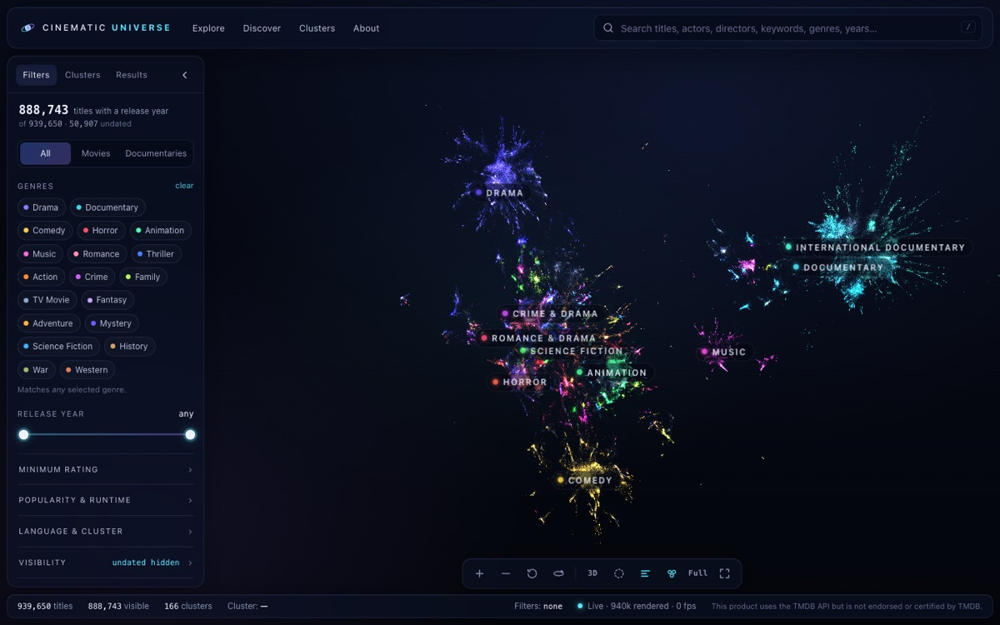

Cinematic Universe
An interactive 3D galaxy of nearly a million movies and documentaries. Every star is a real title, and neighbouring stars are genuinely similar films. Fly from genre to sub-genre to a single film, and see why each recommendation matches.
940,938 titles 166 sub-genres 120 fps no backend
A Python pipeline builds a 626-dimension profile for every title, then UMAP, HDBSCAN and a custom ranking engine. Everything ships as static files rendered with Three.js and a Web Worker on Cloudflare.
